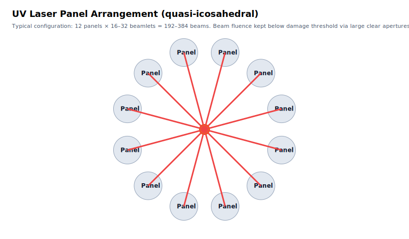

- Executive summary
- Net‑positive operating points
- Operating modes (1 Hz vs 5 Hz vs 10 Hz)
- 4096‑brick driver — how the “many small lasers” combine
- Single‑seed timing & jitter budget
- Dual‑chamber handover & buffer sizing
- Pellet tracking & targeting accuracy
- Meters & acceptance test (for policymakers)
- Figures
Executive summary
This demonstrator aims to be net‑electric positive while staying small enough for fast licensing and rapid iteration. The most defensible point is 2 MJ/shot @ 5 Hz with G≈35, laser wall‑plug ≈15%, and auxiliaries ≈ 0.5 MWe. That combination yields about +0.9 MWe net while keeping window fluence, panel apertures, and pellet logistics modest.
Net‑positive operating points
Net ≥ 0 if and only if:
Ef·f × ( ηth→e − 1/(G·ηlaser) ) ≥ Paux
With G=35, ηlaser=0.15, ηth→e=0.33, the bracket is 0.1395. Below are concrete points that clear net.
| Case | Ef (MJ) | Hz | G | ηlaser | Paux (MWe) | Pth (MW) | Gross MWe | Laser elec (MWe) | Net MWe |
|---|---|---|---|---|---|---|---|---|---|
| A — 4 MJ @ 1 Hz (low-rep net) | 4.00 | 1.00 | 35 | 0.15 | 0.30 | 4.00 | 1.32 | 0.76 | 0.26 |
| B — 2 MJ @ 2 Hz (minimum net) | 2.00 | 2.00 | 35 | 0.15 | 0.50 | 4.00 | 1.32 | 0.76 | 0.06 |
| C — 2 MJ @ 5 Hz (recommended demo) | 2.00 | 5.00 | 35 | 0.15 | 0.50 | 10.00 | 3.30 | 1.90 | 0.90 |
| D — 2 MJ @ 10 Hz (clear net) | 2.00 | 10.00 | 35 | 0.15 | 1.00 | 20.00 | 6.60 | 3.81 | 1.79 |
| E — 2 MJ @ 1 Hz (efficiency boost) | 2.00 | 1.00 | 40 | 0.20 | 0.30 | 2.00 | 0.66 | 0.25 | 0.11 |
| F — 4 MJ @ 1 Hz (higher gain) | 4.00 | 1.00 | 40 | 0.15 | 0.30 | 4.00 | 1.32 | 0.67 | 0.35 |
Recommendation: start at Case C (2 MJ @ 5 Hz) for a clean net‑positive claim; qualify 1 Hz physics at 4 MJ (Case A) during bring‑up.
Operating modes (1 Hz vs 5 Hz vs 10 Hz)
- 1 Hz: ideal for early optics/chamber debugging; net needs 4 MJ/shot or better efficiency. Least debris per hour; easiest diagnostics.
- 5 Hz (recommended): balances pellet throughput with clear net. Window/film life is manageable; pumps/cryo don’t dominate auxiliaries.
- 10 Hz: full‑rate feasibility and availability testing. Use after debris, symmetry, and injector QA are proven.
4096‑brick driver — how the “many small lasers” combine
- Architecture: 4096 DPSSL bricks → 256 final beams (≈16 bricks/beam) arranged over ≈12 panels. Incoherent addition; no phase lock required.
- 2 MJ @ 5 Hz, G=35: total UV per shot ≈ 57 kJ ⇒ ~223 J/beam. With a 3 J/cm² damage threshold (2× margin), the clear aperture per beam is ≈ 9–11 cm.
- Per‑brick duty: 57 kJ / 4096 ≈ 14 J/brick/shot; at 5 Hz ⇒ 70 W optical/brick (~470 W wall‑plug/brick @ 15%).
- Tripling near the panel: combine at 1064 nm, then convert to 3ω just ahead of the final window to keep UV path short.
- Window survival: large apertures + gas curtain or thin liquid film; cassette swaps restore performance; per‑beam power balance ±3%.
- Graceful degradation: install 18 bricks/beam, use 16; controller rebalances on failure; hot‑swap brick cassettes.
Single‑seed timing & jitter budget
- One master seed at 1064 nm fan‑out by stabilized fibers; each brick gated by a Pockels cell with fine delay.
- Measured/trimmed jitter < 50 ps panel‑to‑panel using pilot pulses and cross‑correlation. Way below what pellet flight demands.
- Maser pre‑heat: pulsed gyrotron, e.g., 1 MW peak for 20–100 µs (≈ 20–100 J delivered). Average draw is only a few kW at 5–10 Hz.
Dual‑chamber handover & buffer sizing
Two chambers alternate so availability stays high. A small molten‑salt buffer rides the 5–10 minute handover:
- Buffer sizing heuristic: 60 s of full thermal output. For 10 MW(th) demo heat, E = 600 MJ. With FLiBe (cp≈2.4 kJ/kg‑K) and ΔT=100 K → m ≈ 2.5 t (≈1.3 m³). Scale linearly with thermal power.
- Continuous pellet factory: stays at 5–10 Hz and feeds whichever chamber is live.
Pellet tracking & targeting accuracy
- Pellet speed ≈ 300 m/s; 2 m standoff gives 6.7 ms flight. Hitting a 100 µm window needs 0.33 µs timing accuracy—easy vs 50 ps laser jitter.
- Pointing: 100 µm at 2 m → 50 µrad. Fast tip/tilt stages (kHz) can hold this.
- Shot sequence: stereo/ToF → predict → maser (−30…−3 µs) → UV foot → 5 ns spike → veto outside gate.
Meters & acceptance test (for policymakers)
- Revenue‑grade meters on: (i) bus export, (ii) laser racks, (iii) all other auxiliaries.
- Public display: 15‑min rolling net power = Pbus − Plaser − Paux.
- Acceptance criterion: sustain ≥ +0.5 MWe net for ≥ 30 minutes at the selected operating point (e.g., Case C).
Figures

Figure 1 — Chamber cross‑section: injector, maser, beam panels, alpha capture, blanket stack, HX.

Figure 2 — System block: factory → injector → maser → UV panels → chamber → buffer → double‑wall HX → power, with closed tritium loops.

Figure 3 — UV panel arrangement (12 panels × 16–32 beamlets ⇒ 192–384 beams).

Figure 4 — Heat & tritium loops (helium‑swept double‑wall HX; DTU; pellet factory recirculation).